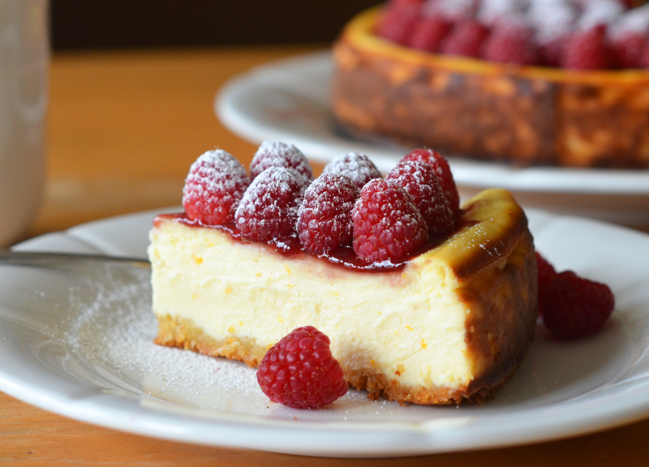

Italian Cheesecake
A slightly lighter version of cheesecake without the crust!
Ingredients
- 1 ½ pounds ricotta cheese
- 2 cups confectioners' sugar
- 3 eggs
- 1 ½ teaspoons vanilla extract
- ½ teaspoon almond extract
- ½ teaspoon rum flavored extract
- 1 tablespoon grated lemon zest
- ¼ cup fresh lemon juice
- 1 tablespoon grated orange zest
Steps
- Preheat oven to 400 degrees F (205 degrees C). Grease and flour one 9 inch round springform or regular pan.
- Combine the ricotta, confectioners' sugar and eggs. Blend well. Stir in vanilla, almond extract, rum extract, lemon juice, lemon zest and orange zest. Beat by hand until smooth and creamy. Pour batter into the prepared pan.
- Bake at 400 degrees F (205 degrees C) for 40 minutes, until golden. Place on a rack and cool.
Return to main page